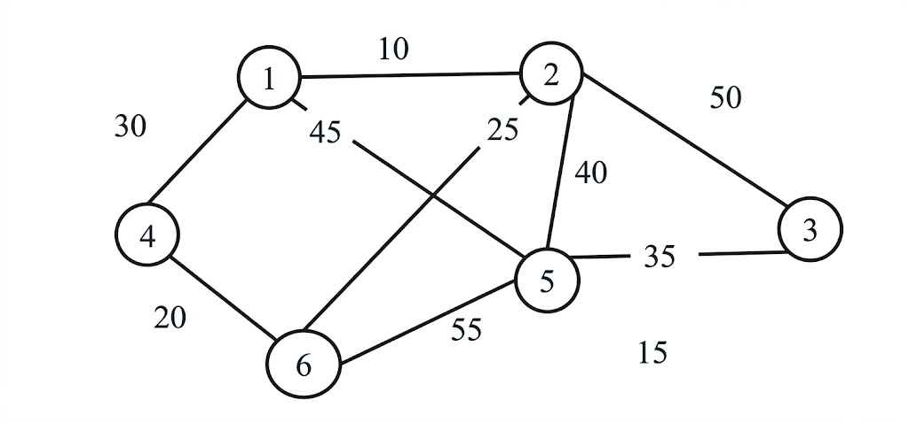
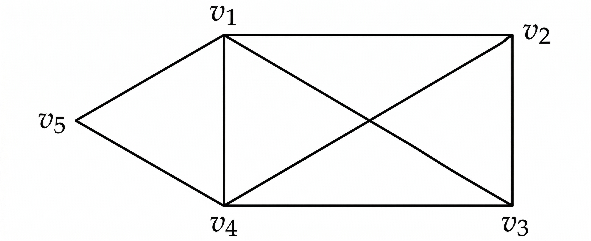

Rajiv Gandhi Proudyogiki Vishwavidyalaya, Bhopal
New Scheme Based On AICTE Flexible Curricula
CSIT-Computer Science & Information Technology | IV-Semester
Unit-I:
Algorithms, Designing algorithms, analyzing algorithms, asymptotic notations, heap and heap sort. Introduction to divide and conquer technique, analysis, design and comparison of various algorithms based on this technique, example binary search, merge sort, quick sort, strassen’s matrix multiplication.
Previous Years questions appears in RGPV exam.
Q.1) Write a recursive algorithm for computing the nth Fibonacci number. (June-2025)
Q.2) A machine needs a minimum of 200 sec to sort 1000 elements by Quick sort. What is the minimum time needed to sort 200 elements will be approximately? (June-2025)
Q.3) Generate recurrence relation from the recursive binary search algorithm. (June-2025)
Q.4) Consider the problem of finding the smallest and largest elements in an array of numbers using divide and Conquer method. (June-2025)
Q.5) Find the time complexity of the recurrence relation $T(n)=n+T(n/10)+T(7n/5)$. (June-2025)
Q.6) Analyze the time complexity of Strassen's algorithm compared to conventional matrix multiplication. (June-2025)
Q.7) The recurrence $T(n)=7T(n/2)+n2$ describe the running time of an algorithm A. A competing algorithm A has a running time of $\Gamma(n)=a\Gamma(n/4)+n2.$ What is the largest integer value for a A' is asymptotically faster than A? (June-2025)
Q.8) Explain properties of Binomial Heap in. Write an algorithm to perform uniting two Binomial Heaps. And also, to find Minimum Key. (June-2025)
Q.9) What is stable sorting algorithm? Which of the sorting algorithms we have seen are stable and which are unstable? Give name with explanation. (June-2025)
Q.10) Write Merge sort algorithm and sort the following sequence {23, 11, 5, 15, 68, 31, 4, 17} using merge sort. (June-2025)
Q.11) Obtain the asymptotic bound using the substitution method for the recurrence relation $T(n) = 3T(n/3) + n$ and represent it in terms of $\theta$ notation. (June-2024)
Q.12) What is Merge sort? Sort the elements 20.30.15.11.35.19.12.11.55 using Merge sort. (June-2024)
Q.13) Discuss Strassen's matrix multiplication and Classical O(n²) methods. Determine when Strassen's method outperforms classical method. (June-2024)
Q.14) Write short notes on any two of the following.
a) Binary search algorithm and its time complexity (June-2024)
Q.15) Explain algorithm design technique? How do you measure the algorithm running time? (June-2023)
Q.16) Give the divide and conquer solution for binary search and analyze the time complexity for it. (June-2023)
Q.17) Explain the quick sort algorithm, simulate it with the following data 20, 35, 10, 16, 54, 21, 25. (June-2023)
Q.18) Write short notes on any two of the following.
b) Merge sort (June-2023)
Q.19) Define Big O notation. How is it used to describe the upper bound of an algorithm's time complexity? (Nov-2023)
Q.20) In what scenarios is worst-case analysis more relevant than average-case analysis discuss and vice versa also. (Nov-2023)
Q.21) When is it appropriate to sacrifice code readability for the sake of optimization, and when is it not? Explain. (Nov-2023)
Q.22) Explain the significance of asymptotic notations (such as Big O, Big Omega, and Big Theta) in algorithm analysis. (Nov-2023)
Q.23) Explain the heap sort algorithm step by step with suitable example. (Nov-2023)
Q.24) Discuss the key steps involved in the divide and conquer paradigm. (Nov-2023)
Unit-II:
Study of Greedy strategy, examples of greedy method like optimal merge patterns, Huffman coding, minimum spanning trees, knapsack problem, job sequencing with deadlines, single source shortest path algorithm, etc.
Previous Years questions appears in RGPV exam.
Q.1) What is Minimum Cost Spanning Tree? Explain Kruskal's Algorithm with the help of algorithm. (June-2025)
Q.2) Suppose character a, b, c, d, e, f has probabilities 0.07, 0.09, 0.12, 0.22, 0.23, 0.27 respectively. Find an optional Huffman code and draw the Huffman tree. What is the average code length? (June-2025)
Q.3) Prove that if the weights on the edge of the connected undirected graph are distinct then there is a unique Minimum Spanning Tree. Give an example in this regard. Also discuss Kruskal's Minimum Spanning Tree in detail. (June-2025)
Q.4) Define spanning tree? Construct a minimal spanning tree for the given graph using Prim's algorithm.

(June-2024)
Q.5) Solve the following problem of job sequencing with deadlines using the Greedy method.
$n = 4, (p_1, p_2, p_3, p_4) = (100, 10, 15, 27)$ and $(d_1, d_2, d_3, d_4) = (2, 1, 2, 1)$. (June-2024)
Q.6) Apply the greedy method to solve the 0/1 Knapsack problem for $n = 3, m = 20, (w_1, w_2, w_3) = (18, 15, 10)$ and $(p_1, p_2, p_3) = (25, 24, 15)$. (June-2024)
Q.7) Write short notes on any two of the following.
b) Single source shortest path algorithm (June-2024)
Q.8) Compute the optimal solution for job sequencing with deadlines using greedy method. $N=4$, profits $(p_1,p_2,p_3,p_4)=(100,10,15,27)$, deadlines $(d_1,d_2,d_3,d_4)=(2,1,2,1)$ (June-2023)
Q.9) Consider the following instance of the knapsack problem and solve it using greedy method $n=7$, $m=15$, $(p_1, p_2, p_3, p_4, p_5, p_6, p_7)=(10,5,15,7,6,18,3)$ and $(w_1, w_2, w_3, w_4, w_5, w_6, w_7)=(2,3,5,7,1,4,1)$. (June-2023)
Q.10) Apply the kruskal algorithm for the following graph and explain.

(June-2023)
Q.11) Write short notes on any two of the following.
c) Optimal merge patterns (June-2023)
Unit-III:
Concept of dynamic programming, problems based on this approach such as 0/1 knapsack, multistage graph, reliability design, Floyd-Warshall algorithm, etc.
Previous Years questions appears in RGPV exam.
Q.1) Construct a multistage graph for the given graph using the greedy method.
![A directed multistage graph with 12 vertices. Stage 1 has vertex 1 (s). Stage 2 has vertices 2, 3, 4, 5. Stage 3 has vertices 6, 7, 8. Stage 4 has vertices 9, 10, 11. Stage 5 has vertex 12 (t). The directed edges and their weights are: from 1 to 2 with weight 9; 1 to 3 with weight 7; 1 to 4 with weight 3; 1 to 5 with weight 2; 2 to 6 with weight 4; 2 to 7 with weight 2; 2 to 8 with weight 1; 3 to 6 with weight 2; 3 to 7 with weight 7; 4 to 8 with weight 11; 5 to 7 with weight 11; 5 to 8 with weight 8; 6 to 9 with weight 6; 6 to 10 with weight 5; 7 to 9 with weight 4; 7 to 10 with weight 3; 8 to 10 with weight 5; 8 to 11 with weight 6; 9 to 12 with weight 4; 10 to 12 with weight 2; 11 to 12 with weight 5.](../../sem-IV-papers/CSIT/csit-403/ques-diagrams/Q.4-b_june-24-Q5-a_nov-22.png)
(June-2024)
Q.2) Explain the Floyd Warshall algorithm for the given graph.

(June-2024)
Q.3) Solve the following $0/1$ Knapsack problem using dynamic programming $P=(11,21,31,33)$ $W=(2,12,23,15)$, $C=42$, $n=4$. (June-2023)
Q.4) Design a three stage reliability system with device types $d_1$, $d_2$ and $d_3$. The costs are $30, $15 and $20 respectively. The cost of the system is to be no more than $105. The reliability of each device is 0.9, 0.8 and 0.5 respectively. (June-2023)
Q.5) On which type of problem we apply multi stage graph technique? Explain with example. (June-2023)
Q.6) Write short notes on any two of the following.
d) Floyd Warshall algorithm (June-2023)
Q.7) Walk through the dynamic programming solution for the $0/1$ knapsack problem. (Nov-2023)
Q.8) What is the significance of overlapping sub-problems in dynamic programming? (Nov-2023)
Q.9) Introduce the Floyd-Warshall algorithm for all-pairs shortest path. (Nov-2023)
Unit-IV:
Backtracking concept and its examples like 8 queen’s problem, Hamiltonian cycle, Graph coloring problem etc. Introduction to branch & bound method, examples of branch and bound method like traveling salesman problem etc. Meaning of lower bound theory and its use in solving algebraic problem, Introduction to parallel algorithms.
Previous Years questions appears in RGPV exam.
Q.1) Explain Backtracking. Let set $S=\{1,3,4,5\}$ and $X=8$, we have to find subset sum problem using backtracking approach. (June-2025)
Q.2) Using branch and bound technique explain the 0/1 knapsack problem. (June-2024)
Q.3) Give the solution to the 8-queens problem using backtracking. (June-2024)
Q.4) What is graph coloring? Explain graph coloring for the given graph.

(June-2024)
Q.5) Write short notes on any two of the following.
c) Parallel algorithms (June-2024)
Q.6) Briefly explain 8-queen problem using backtracking with algorithm. (June-2023)
Q.7) Identify the Hamiltonian cycle from the following graph.

(June-2023)
Q.8) Write an algorithm for traveling salesperson problem using check bounds. (June-2023)
Q.9) Explain the concept of backtracking in algorithmic design. (Nov-2023)
Q.10) Describe the 8 Queen's Problem. How does backtracking help to find a solution? (Nov-2023)
Q.11) What is the Hamiltonian Cycle problem and how is it approached using backtracking? (Nov-2023)
Q.12) Describe the Traveling Salesman Problem (TSP). How is the branch and bound method applied to find an optimal solution? (Nov-2023)
Q.13) Provide an example illustrating the application of lower bound theory to a specific algebraic problem. (Nov-2023)
Unit-V:
Binary search trees, height balanced trees, 2-3 trees, B-trees, basic search and traversal techniques for trees and graphs (In order, preorder, postorder, DFS, BFS), NP-completeness.
Previous Years questions appears in RGPV exam.
Q.1) Explain B-Tree and its properties. Also write B-Tree deletion cases with example. (June-2025)
Q.2) For a binary tree T, the preorder and in-order traversal sequences are as follows:
In order : BCAEGDHFIJ
Preorder : ABCDEGFHIJ
i) Construct a binary Tree.
ii) What is its post-order traversal sequence? (June-2025)
Q.3) Use the function OBST to compute $w(i, j), r(i, j)$ and $c(i, j), 0 \le i < j \le 4$ for the identifier set $(a_1, a_2, a_3, a_4) =$ (char, float, while, else) with $p(1) = \frac{1}{20}, p(2) = \frac{1}{5}, p(3) = \frac{1}{10}, p(4) = \frac{1}{20}, q(0) = \frac{1}{5}, q(1) = \frac{1}{10}, q(2) = \frac{1}{5}, q(4) = \frac{1}{20}$. Using $r(i, j)$'s construct the optimal binary search tree. (June-2024)
Q.4) Explain in detail about 2-3 Trees with an example. (June-2024)
Q.5) Write short notes on any two of the following.
d) NP Completeness (June-2024)
Q.6) Write a function to construct the binary tree with a given inorder sequence I and given postorder sequence P. What is the complexity of the function? (Nov-2023)
Q.7) Give an example of an n-vertex graph for which the depth of recursion of DFS starting from a particular vertex V is n-1 whereas the queue of BFS has at most one vertex at any given time, if BFS is started from the same vertex V. (Nov-2023)
Q.8) Discuss the operations performed on the binary search tree for the following data: 20, 49, 41, 93, 69, 90, 76, 62, 81, 75, 10, 79, 87, 38 and delete 41 and 76. (June-2023)
Q.9) Differentiate between BFS and DFS. (June-2023)
Q.10) Write short notes on any two of the following.
a) 2-3 trees (June-2023)
Q.11) What is a B-tree and what advantages does it offer over other tree structures? (Nov-2023)
Q.12) Explain the difference between P, NP and NP-complete problems. (Nov-2023)